My role
Results
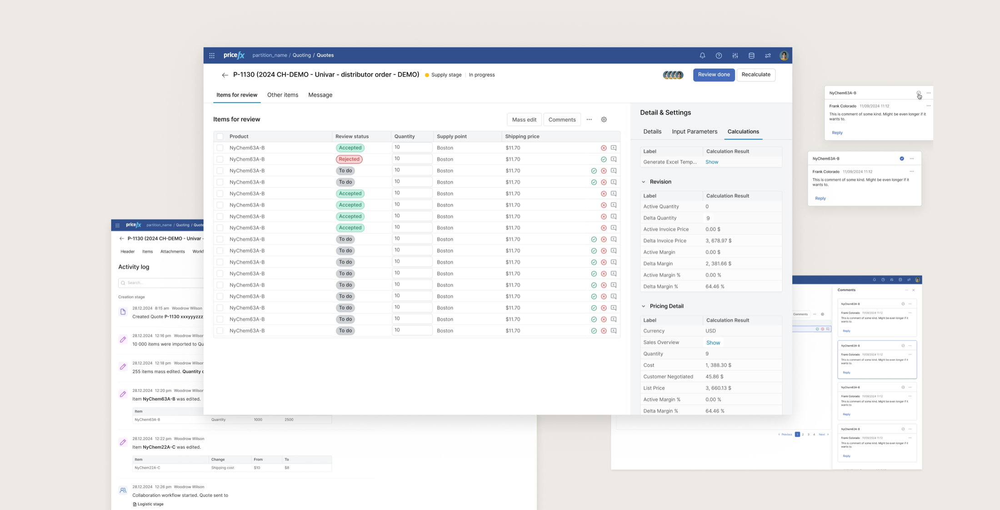
Quoting is part of Pricefx product, which allows businesses to negotiate profitable pricing for their products. As product designer, I was tasked to introduce collaboration and communication between users into this process, working side by side with PM and Dev team.
In the world of pricing everything is about timing. Whether it's setting strategic pricing or reacting to sudden changes that are impacting your price - being quick is of utmost importance. This is true also for Quoting, where you want to make the best possible offer to your customer, while grabbing as much revenue as you can, for yourself.
When Quote arrives even half day later than agreed, it might mean that your customer will choose someone else and you're loosing big time.
Back in the August of 2024, we've heard rumors that this is happening to some of our customers. Creating Quote took too long and if customer wasn't happy about it, Quote has to be reworked and entire process started again. There were rumors that this process is taking as much as 19 days for some of our customer.
In that moment we knew - it's time to get our hands dirty again!
It was late August and the next release was drawing closer and closer. We heard rumors, but we didn't know what was causing the problems for sure. Was it sheer amount of products in the Quote, that was causing delays? Or was it rigid process of approvals that made Quote go in circles before it was completed? Or could it be that responsible people needed to take turns on Quote to complete it?
I knew I had to talk to users to find out, but I didn't have enough time to do full-blown research study with interviews. With other projects on my hands, it just wasn't possible. There had to be another way.
And then it occurred to me - why not compile everything we know into quick and dirty prototype and show it to users right away?
When I went searching for evidence, I could never anticipate what I was going to find out. It looked like our users needed to send emails to each other to make sure that certain changes in Quote will happen. At first, I didn't understand. Why would they need to do this? Wouldn't it be much easier to just make changes themselves?
Puzzled, but determined, we sat down for brainstorming sessions and came up with two approaches. One was assuming that actual editing of Quote is done by single user and this user gets information about what to input into Quote via emails from colleagues. Second one was complete opposite - we assumed that everyone is making edits.
I quickly jotted down two concepts with help of HTML export from current app and we went to our users.
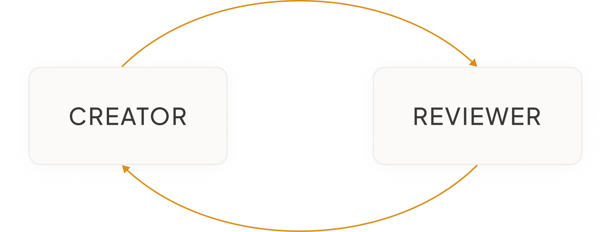
1 Creator and 1 Reviewer. Only Creator edits the Quote.
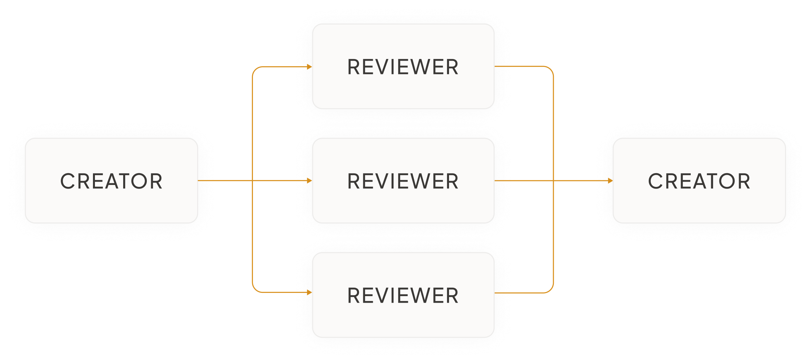
Everyone edits the Quote - Creator and Reviewer as well.
Multiple reviews going on in parallel.
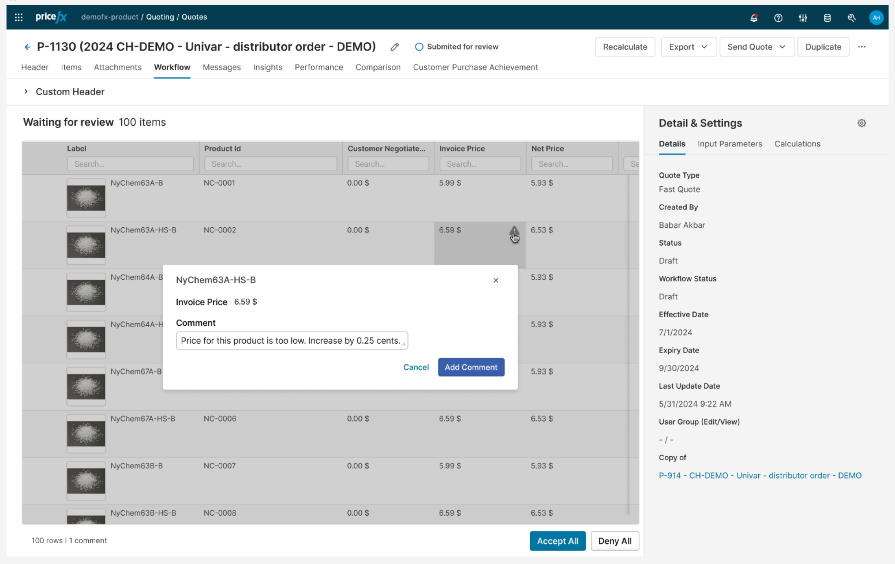
Reviewer adding comment to specific product, before denying and sending all items back to creator
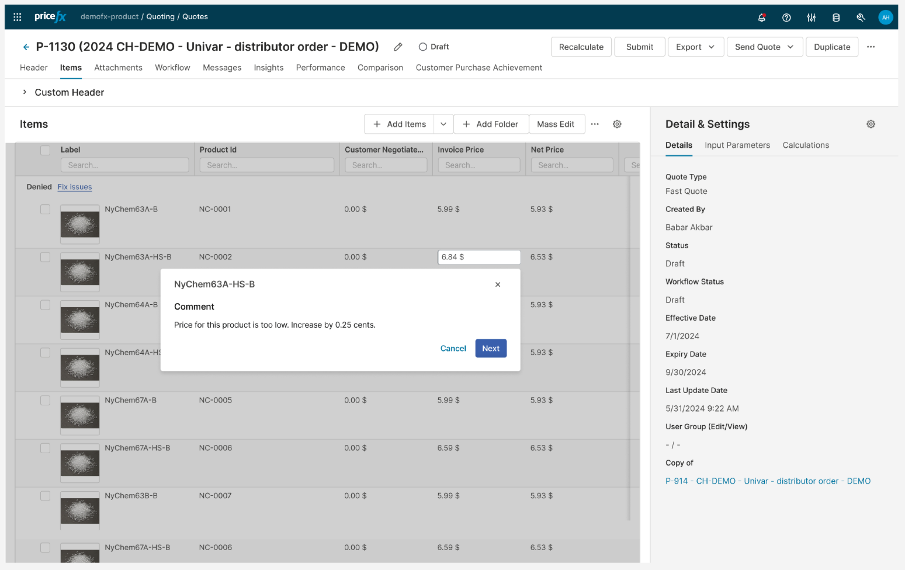
Creator going through comments and making adjustments
After series of calls message was getting quite clear.
No one user has enough competency and knowledge to make correct decisions about pricing of all items. To complete Quote, you need a lot of people working together in parallel.
With multiple users coming in and out into the process, and also responsible for different parts of products in the Quote, one thing was very clear. We needed to understand the process in and out if we were ever to be successful in solving this issue. So we buried ourselves in MIRO and after many iterations we were able to create process that would fit our customers' businesses like tailor-made suit.
Simplified process. View more detailed process here.
There were two major parts we needed to address - accepting and rejecting of products in Quote and their transfer back and forth between users, based on their status, and enabling effective communication between collaborators.
Once creator of the Quote sent it for review to collaborators, we had to figure out how to communicate this somehow complicated process in a simple way. Or did we? When I was thinking about how to achieve effective collaboration and ensure that all moving parts will go in the right direction, thought occurred to me - what if single user doesn't need to know everything?
Except the sales guy, but I'll get to that later. Exploring this direction, design doesn't communicate straight away complexities of process in its entirety. Rather focuses on showing user only things that require his attention.
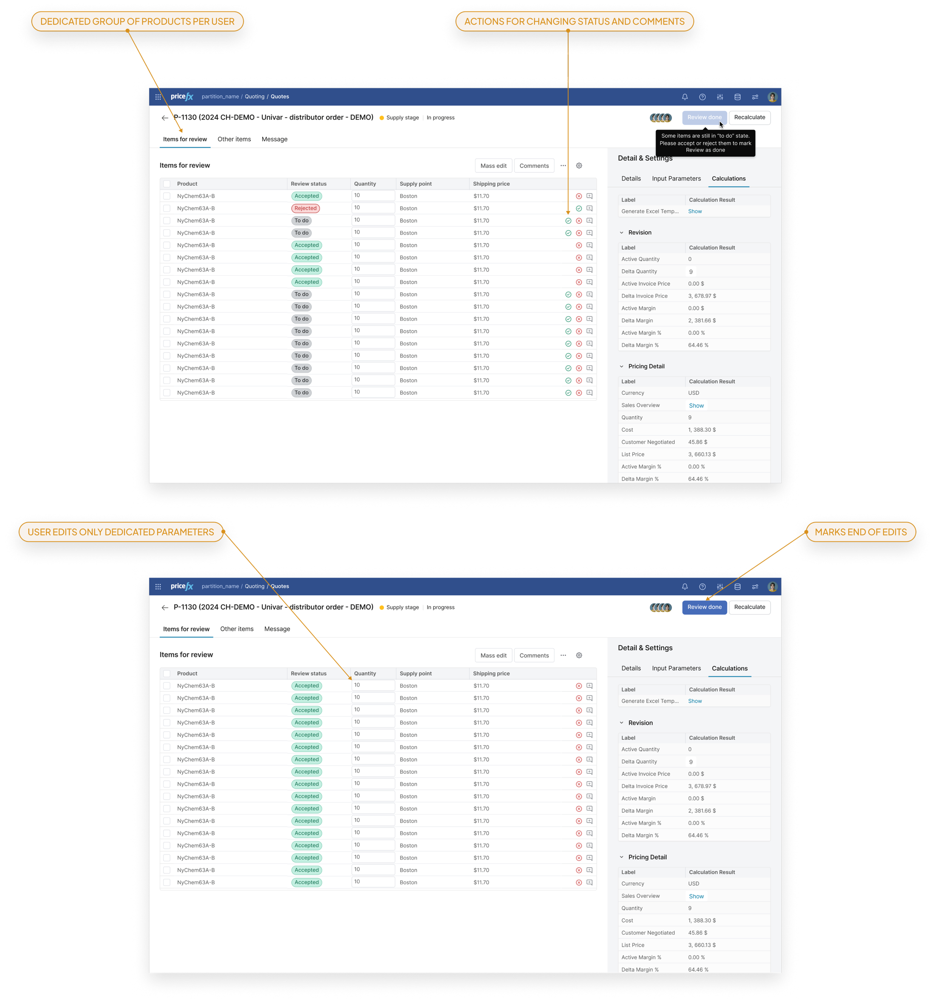
Moving products between users based on status
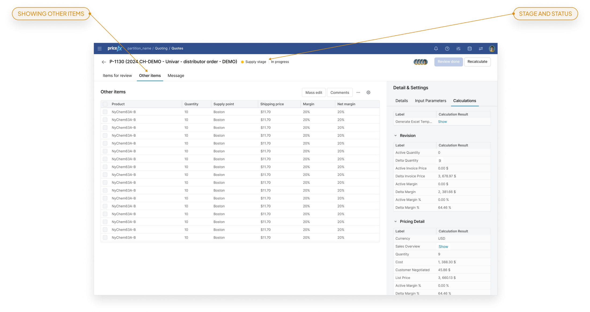
Seeing other items for preserving context of Quote
Of course in order for this to work properly, we needed a way how to communicate to users, that their collaboration is needed. For this we employed simple email and in-app notification.
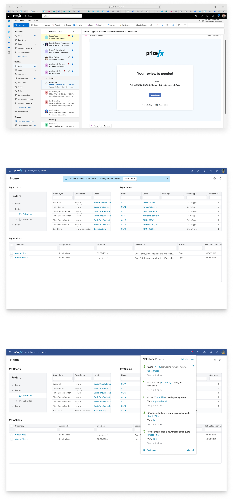
Notifications - email, real-time, in notification centre
Whilst having a great mechanism for collaboratively working in Quote is awesome, it doesn't mean anything, if we wouldn't handle communication part as well. Since our users were mainly utilizing email for collaborating on Quotes, we needed a way how to let them do it in-app. We already had a message functionality in Quotes, but this feature was not utilized as much as we previously thought it would be.
This was caused by the fact, that most of the communication in Quote was happening on single product level (single row in table). Thing that our messaging wasn't able to cover.
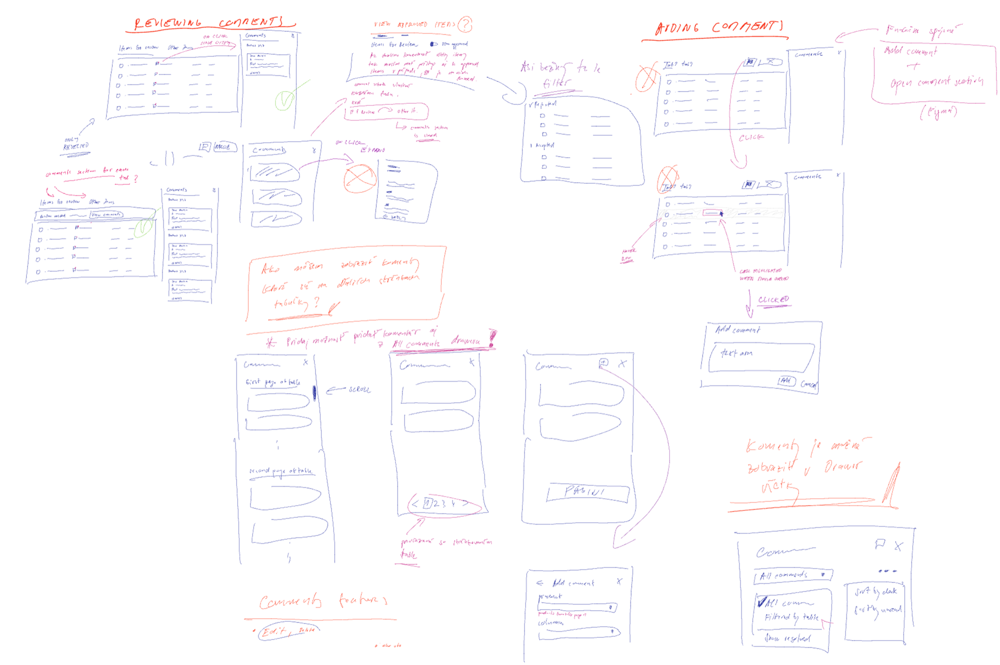
Early sketches of Comments
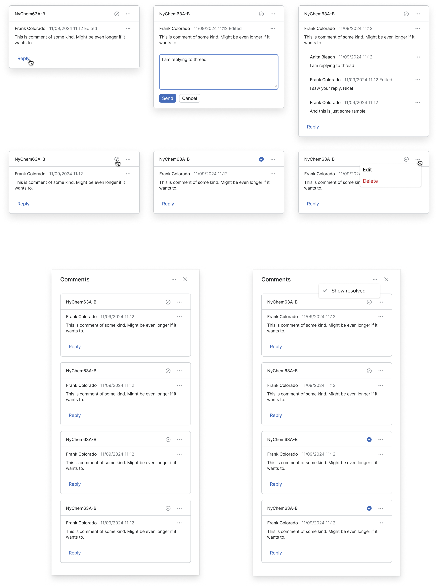
Comments components
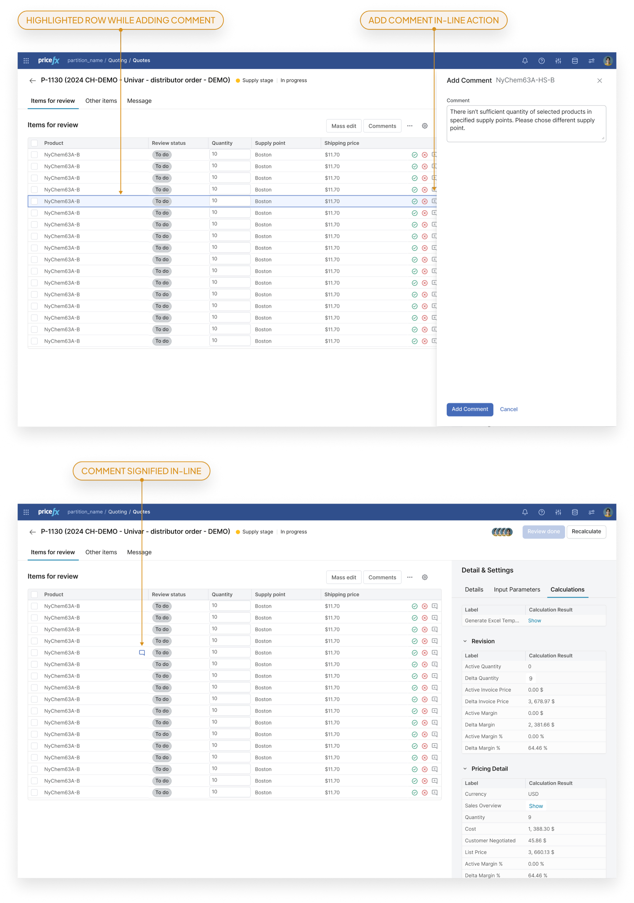
Adding comments to product
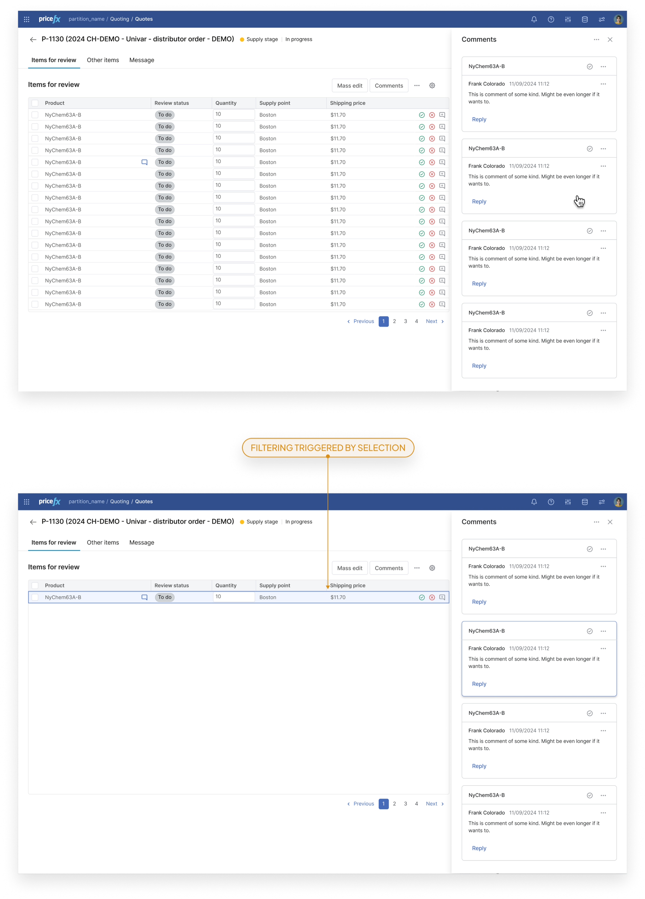
Filtering product with comment
As our customers are usually large enterprises, their processes must give a thought or two to audits. To know who did what, when and in which manner, was non-negotiable and we needed to provide a way how to track it and show it in our application. Hand in hand with that, we needed to show users the state of collaboration.
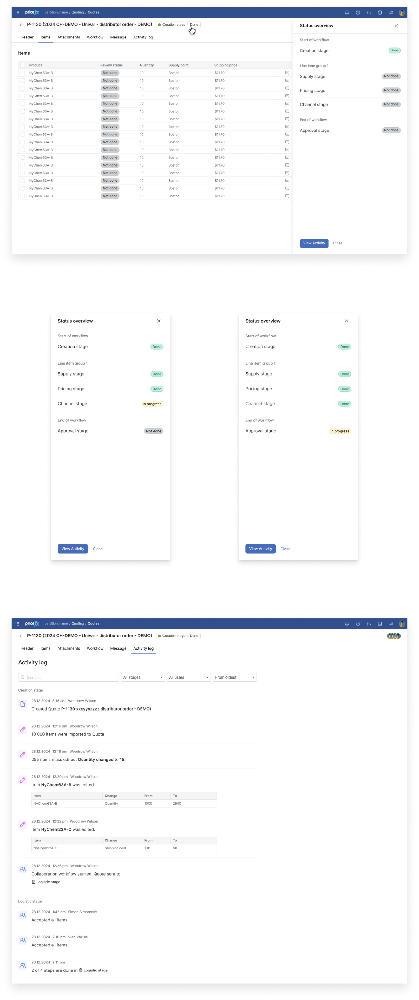
Status and activity tracking in-app
When we've got this out of the door, we started gathering feedback from our customers. Generally, the feedback was great praising possibility to collaborate on Quote in such effective manner. Fast forward one year, and one of the TOP 10 customers - Exxon mobile, is already using it in their environment, citing this to be the only reason for renewing their yearly contract with Pricefx.
In addition to that, thanks to Collaboration Workflows, Pricefx was even able to negotiate higher pricing for Exxon's renewal. And now, Shell - another customer from TOP 10, is starting to test it on their environment.